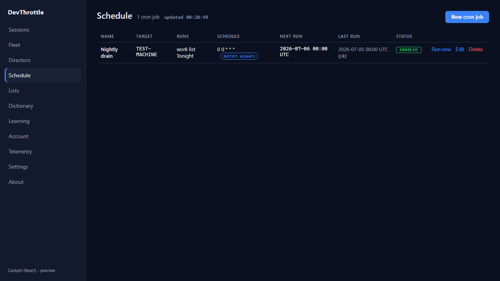
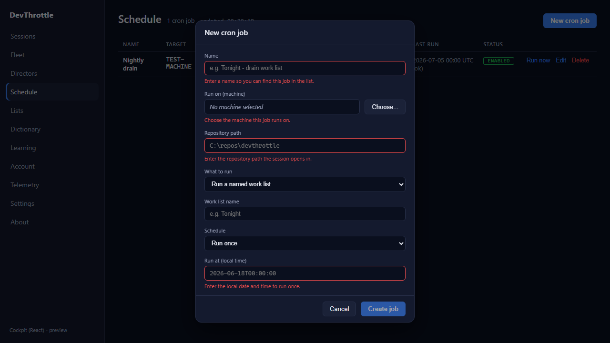
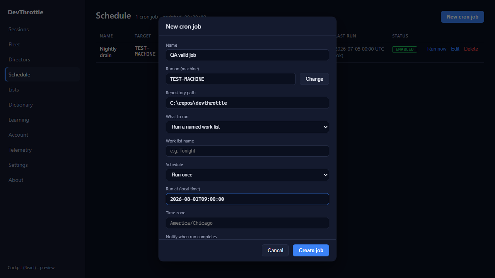

Cockpit Schedule create form: client-side validation + clean enable/disable toggle DTO. Independently verified by the QA Agent - not relying on the developer's report or screenshots. PR #1041, branch issue-1027-schedule-validation. Verified 2026-07-06.
Built the PR branch in an isolated git worktree (own npm install). Ran the real Cockpit React build under a fresh Vite dev server on an isolated port, then drove the actual ScheduleView component in a real Chromium via Playwright with route interception - capturing the exact request bodies the component emits. Route stubs supplied a canned job carrying the Gateway's computed read-only fields (createdUtc / lastFiredUtc / nextRunUtc / lastStatus) so the toggle test could prove they are not echoed back. No live Gateway is required to verify client-side validation and the outgoing request shape; the component is the unit under test.
| # | Criterion | Expected | Actual | Result |
|---|---|---|---|---|
| 1 | Empty form blocked with clear per-field guidance; Create disabled until minimally valid | Create disabled; per-field messages for name, machine, repoPath, schedule | Create button disabled=true; 4 per-field messages shown, invalid fields red-bordered
(see qa-02) |
PASS |
| 2 | A valid job still creates correctly (POST body correct) | Create enables once name+machine+repoPath+run-at filled; POST carries the filled fields, no computed fields | Create enabled=true, 0 remaining errors; POST body correct (see below, qa-03) |
PASS |
| 3 | Enable/disable toggle sends only mutable fields (no nextRunUtc / lastFiredUtc / lastStatus / createdUtc) | PUT body carries enabled + mutable fields only; none of the 4 forbidden computed fields | PUT body carries enabled:false and every mutable field; forbidden fields present =
[] |
PASS |
| 4 | Full build gate clean | cockpit build, root lint, Gateway RunCockpitBuild, cc-director.sln all clean | cockpit npm run build OK; root eslint . clean; Gateway
-p:RunCockpitBuild=true 0W/0E; dotnet build cc-director.sln 0W/0E |
PASS |
{
"id": "", "name": "QA valid job", "enabled": true,
"scheduleKind": "oneOff", "cronExpression": null, "runAt": "2026-08-01T09:00:00",
"target": { "machine": "TEST-MACHINE" },
"action": { "repoPath": "C:\\repos\\devthrottle", "seed": "", "workListName": "" },
"preventOverlap": true, "notifyOn": "none", "notifyWebhookUrl": null
}
{
"id": "", "name": "Nightly drain", "enabled": false,
"scheduleKind": "recurring", "cronExpression": "0 0 * * *", "runAt": null,
"timeZoneId": "America/Chicago", "target": { "machine": "TEST-MACHINE" },
"action": { "repoPath": "C:\\repos\\devthrottle", "seed": "", "workListName": "Tonight" },
"preventOverlap": true, "notifyOn": "always", "notifyWebhookUrl": null
}
// forbidden computed fields present in body: [] (createdUtc / lastFiredUtc / nextRunUtc / lastStatus
// were all present on the canned job the component read, and none were echoed back)
qa-01 - job list (canned job with computed fields)

qa-02 - empty form blocked, 4 per-field guidance messages, Create disabled

qa-03 - valid form, no errors, Create enabled

Change is confined to apps/cockpit/src/schedule/ScheduleView.tsx and
schedule.css. Negative sweep of both modal screenshots shows the rest of the form
(What to run, Work list, Schedule, Notify) renders unchanged. toMutableDto produces the
same clean shape as the existing buildFromForm edit path. No blocking security rule (DT-*)
touched; no architecture/security change, so no CenCon doc update required. Note: the Time zone field
is a placeholder-only input and is not part of #1027's required-field set (name / machine / repoPath /
schedule) - the empty timeZoneId in a valid POST is pre-existing behavior, out of scope here.